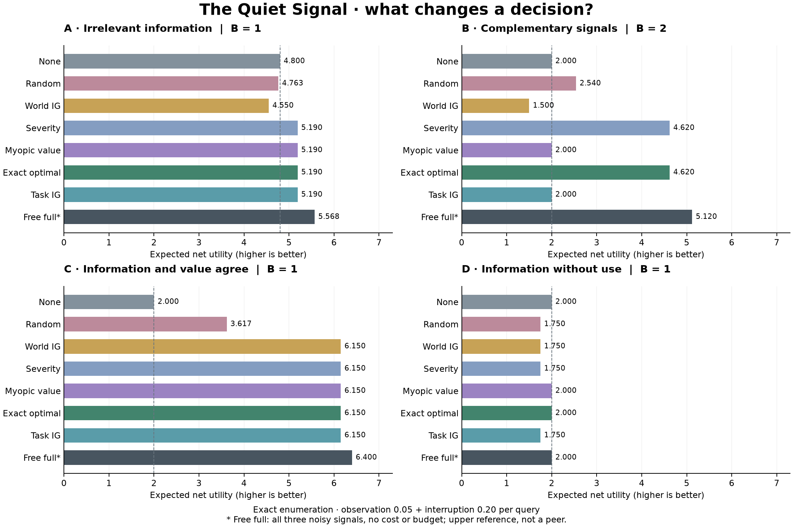

RESEARCH NOTE · 0.1 · NOVEMBER 8, 2026
The signal is not sacred.
What it changes matters.
Commissioned by Ben Amuwo. Built and analyzed with Codex assistance. A separate finite experiment, with no amendment to established Sīdus results.
Decision value can beat information gain. Greedy decision value can also miss the only signals that help.
EVIDENCE · ABOUT THIS SPECIFIED MODEL
One resource unit can be reserved for +2, or sent on one of two routes: +8 if correct, −8 if wrong. Three imperfect binary sensors compete for a budget of 0–3 query packets. Each query costs 0.05 plus an interruption cost. Exact enumeration covers every hidden state and noisy sensor outcome. There is no sampling uncertainty to hide behind a confidence interval.
Four worlds. No universal winner.

At interruption cost 0.20, value selection beats world-information selection in the distraction world. But task-information selection and a simple severity rule match it. Choosing what to be uncertain about changes the comparison.
In the complementary world, neither half alone helps. Two 90%-reliable observations identify their parity correctly with probability 0.82. The pair earns 5.12 gross and 4.62 after cost. Myopic value stops at 2.00; a fixed priority rule matches the exact optimum. Silence is sometimes shortsighted.
In alignment, information and value agree. In the disconnected control, an informative reading still exists, but its connection to the consumer is deliberately cut. The consumer keeps reserving the resource; more information only adds cost.
What counts as use?
For the routing intervention, we hold the world, every noisy sensor output, the chosen transcript and its costs fixed. Only the consumer input is erased. This identifies an effect inside the program. It is not an empirical causal estimate about people. The replay also shows whether erasing an individual message changes the final action; that does not exhaust joint or redundant contributions.
A fair reference, a limited claim
Seven peer policies share the same budget, signal access and query costs. The eighth, free full signals, receives all three noisy outputs without costs or capacity limits. It is an upper reference. With free queries and a nonbinding budget, exact optimal matches it. No compression advantage is claimed.
Optimal dominance is guaranteed by optimizing the stated model; it is an implementation check, not a discovery. The model assumes correct priors, known noise and utilities, and free solver computation. Its packet count is not a validated measure of human attention.
The adversarial record
The release retains 640 base rows and 4,000 sensitivity rows spanning reliability, signal complementarity, interruption cost and budget. Across the 500 chosen grid configurations, myopic value wins/ties/loses 235/237/28 against world information, 157/329/14 against task information, and 310/162/28 against severity. These are descriptions of a constructed grid, not population frequencies.
Hand-derived fixtures preceded comparison runs. A separate rational-arithmetic enumerator checks all adaptive policy trees for 36 configurations. The Python reference and browser export agree on all 640 base expectations, with 35,840 deterministic replay traces checked. Exact expectations have floating-point numerical tolerance, not sampling error.
Inheritance without overclaiming
The local E0-A controls distinguish information from causal use. E0-B addresses metarepresentational discrimination; it is not silently repurposed here. The November 4 E1 RC4 claim freeze reports a PASS at its declared synthetic scope. This project neither reruns nor extends those experiments.
Piko, Aster, Nacre, Bookworm, Ajita, Batrina, Hel, Jayke, Ochre and Buer are reused byte for byte from The Hatchery. Each sheet matches its original Record hash. The companion picker links each Record, preserving credit, AI-production disclosure and the pet-use licence prohibiting commercial replication or resale. Their movement is presentation, never evidence. The observatory has its own visual identity: deep black, vivid signal colours and a deliberately interrupted waveform. The Hatchery and The Seventh Seat informed its warmth and atmosphere. The hero illustration is a visual metaphor, not experimental data; the experiment itself is unchanged.
QUESTION · WHAT SHOULD BE TESTED NEXT?
Freeze a policy's model, then introduce misspecified priors and noise. Add two-step value and joint-information strategies. Test correlated sensors and permuted priorities. Measure computation separately. Ask consenting new readers whether the interface teaches the difference between knowing, acting, and benefiting.
No human comprehension study or external independent replication has been completed. This is a tested local prototype, not publication-ready research. It establishes no result about consciousness, clinical decision-making, human cognition or poverty.
Reproduce it
The complete project includes the commission, finite specification, NumPy engine, rational reference tests, CSVs, figure generator, browser checks and source ledger.
python3 -m venv .venv
.venv/bin/python -m pip install -r requirements-lock.txt
.venv/bin/python -m unittest discover -s tests -v
.venv/bin/python -m quiet_signal.benchmark
.venv/bin/python -m quiet_signal.figures
node scripts/check_export.cjsOpen web/index.html directly to play. No server or network connection is needed once the files are present. See the project README for complete reproduction and validation instructions.